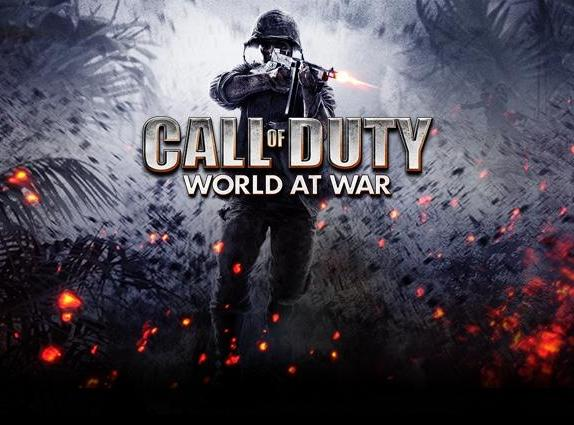
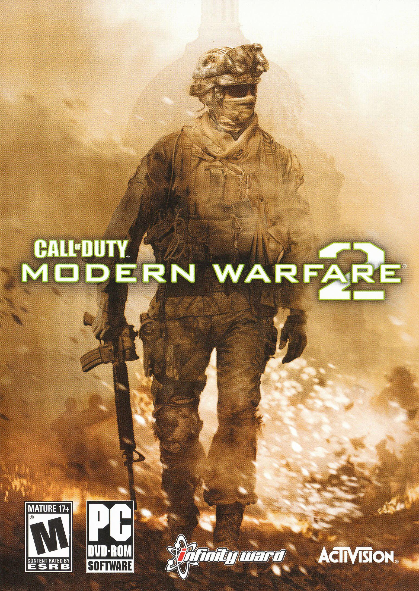
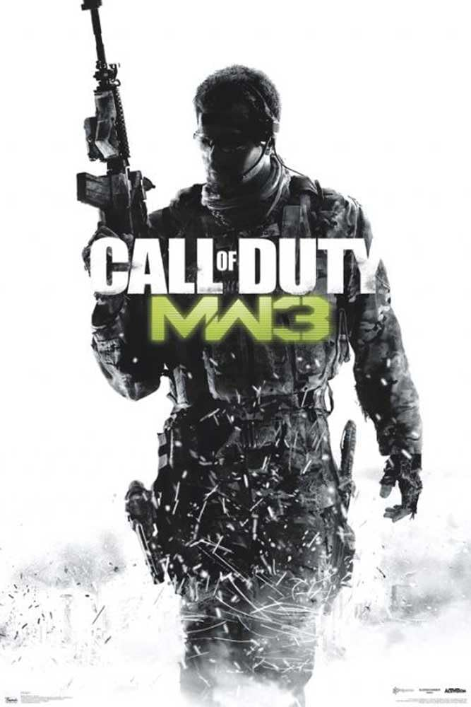
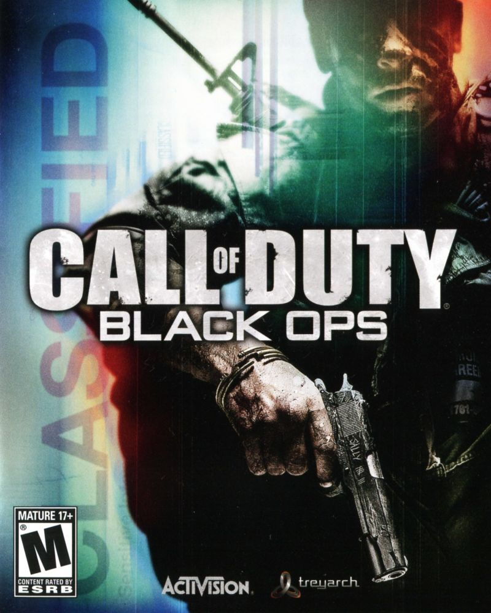

My Collection
This is my curated collection of things that I love. Each item here represents something meaningful to me, whether it's a favorite book, game, album, rock, mineral, tool, art, or memory. This collection showcases how responsive design allows me to adapt my content across all screen sizes.

Call Of Duty World At War 2008
Game | 2008 | War Sim | Zombies
As a Call of Duty fan, World at War is one of those games that I can always go back to and enjoy. I love the dark, gritty atmosphere and how intense the World War II battles feel. The campaign is memorable, but what really makes this game special to me is Nazi Zombies. Spending hours trying to survive with friends, unlocking areas, and reaching higher rounds made it so much fun. The maps, weapons, sounds, and overall gameplay give it a classic feeling that newer Call of Duty games sometimes struggle to recreate. It's truly a legendary game.

Call of Duty Modern Warfare 2 2009
Game | 2009 | War Sim | Team Building
Call of Duty: Modern Warfare 2 (2009) was honestly one of the best gaming experiences for me as a gamer. Everything about the game felt exciting, from the unforgettable campaign to the competitive multiplayer. The maps, weapons, killstreaks, and customization made every match feel different. I loved spending hours leveling up, unlocking new weapons, and competing against other players. The game also had an amazing community that made playing with friends even better. Even though it had its frustrating moments, MW2 had something special that newer games have struggled to recreate. It's a true classic that I will always remember.

Call of Duty Modern Warfare 3 2011
Game | 2011 | War Sim
What made Modern Warfare 3 (2011) so great was how much fun it was to play, especially with friends. As a gamer, I loved the fast-paced multiplayer, satisfying gunplay, killstreaks, and variety of maps. There was always something to work toward, whether it was unlocking new weapons, leveling up, or completing challenges. The campaign was also exciting and continued the story in a way that kept me hooked. Survival Mode was another great feature that added hours of entertainment. MW3 had that classic Call of Duty feeling that made it hard to put the controller down.

Call of Duty Black Ops 2010
Game | 2010 | War Sim | Zombies
Black Ops Zombies (2010) was one of the best gaming experiences because it brought something completely different to Call of Duty. As a gamer, I loved the challenge of surviving endless waves of zombies, unlocking new areas, buying weapons, and working together with friends. Maps like Kino der Toten and Five made every match exciting and memorable. What made Zombies so special was the teamwork, Easter eggs, mystery, and the excitement of trying to beat your previous highest round. I could spend hours playing without getting bored. It wasn't just a game mode; it became a huge part of my gaming experience. Blcak Ops one was probably my favortie in the Black Ops series.

Minecraft 2011
Game | 2011 | Build and Create | Mob Fights
Minecraft is one of those games I can play for hours without even realizing how much time has passed. As a gamer, I love how easy it is to jump in and play without having to worry about complicated missions or competitive matches. Sometimes I just want to relax, mine resources, build something, explore, or survive the night. It's the perfect game to play mindlessly when I want to unwind after a long day. I also enjoy how there is always something to do, even without a specific goal. Minecraft gives me the freedom to play however I want.

New Call of Duty Modern Warfare 4 2026
Game | 2026 | War Sim
Modern Warfare 4 has some great features, especially its graphics, realistic gunplay, weapon customization, and overall gameplay. As a gamer who grew up playing the older Modern Warfare games, I appreciate how modern the experience feels. However, I think it could improve by bringing back what made the original games so special. The older titles had memorable maps, faster-paced multiplayer, and a progression system that kept players coming back. Sometimes newer Call of Duty games feel overly complicated with too many menus and features. I would love to see more classic maps, simpler menus, and that old-school multiplayer feeling return.